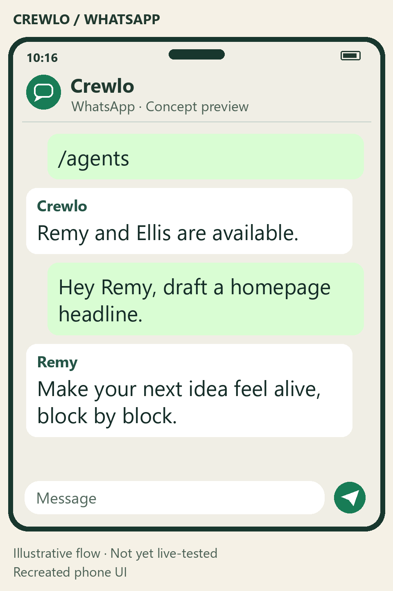

OPTIONAL · CONFIGURE IN THE DESKTOP APP
Take a conversation with you.
Use an existing agent session from a paired messaging account. Keep your computer, Crewlo, the agent and your connection running.
This page explains setup; it does not connect anything. Enter credentials only in the desktop app’s secret fields. Start with source installation if you have not opened Crewlo yet.
Set up Telegram.
A basic exchange was observed in Telegram Web; test your own account, agent and device. Verification scope.
Create your bot.
Open the official @BotFather account in Telegram and send
/newbot. Follow its instructions and store the token securely. Official BotFather documentation.Connect in Crewlo.
In the desktop app, open Telegram, paste the token into its secret field and select Connect. Keep tokens out of chats, screenshots and issue reports.
Pair and confirm on your computer.
Open Crewlo’s pairing link or scan the QR, then choose Start in the bot’s private chat. Return to Crewlo, verify your displayed identity and choose Confirm pairing. The link is single-use and expires after five minutes.
Select an available agent.
Choose Default agent on the desktop, or send
/agentsand then/agent <id>using an actual listed identifier. The session must already be authenticated and available; pairing does not create an agent.Check a real reply.
Send a small greeting that does not change files. Confirm the named reply in Telegram and the same exchange with its Telegram badge in Crewlo’s Conversation.
Long polling needs no public webhook. Do not use another poller or webhook with the same bot at the same time. Only the confirmed owner’s private messages are accepted.
Detailed Telegram troubleshooting ↗Watch the verified exchange in a recreated phone view

Review WhatsApp setup.
The transport is implemented with simulated API tests. The preview below is illustrative; a real WhatsApp round trip has not been verified.
This uses Meta Cloud API, not WhatsApp Web or your personal account’s Linked devices QR. You provide the Meta setup and a public HTTPS relay.
Prepare your Meta app and API number.
Configure WhatsApp Cloud API. For a first test, use Meta’s test number and add your phone as an authorized test recipient. Obtain the Phone number ID, an access token with the required WhatsApp permissions and your App secret. Test tokens can expire; Crewlo does not renew them automatically.
Fill in the WhatsApp panel in Crewlo.
- Phone number ID
- The Meta identifier, not your telephone number.
- Access token
- The token authorized for that API number.
- App secret
- Used to verify webhook signatures.
- Verify token
- A secret you choose: 24–128 letters, digits, underscores or hyphens. Use exactly the same value in Meta.
- Graph API version
- Your app’s version, in
vNN.Nformat. Check it rather than guessing. - Local port
- Defaults to
8788; select a free local port if needed.
Select Connect WhatsApp. Local listener ready only means the local receiver is ready; it does not prove Meta can reach it.
Configure your HTTPS relay and Meta webhook.
Forward your own public HTTPS callback to Crewlo’s displayed local receiver. The default local path is:
http://127.0.0.1:8788/whatsapp/webhookIn Meta, supply the public callback and matching Verify token. Complete verification, subscribe to messages, and ensure the app is subscribed to the relevant WhatsApp Business Account (WABA).
Crewlo does not create a tunnel automatically. This website does not open a port or provide a public relay.
Send the pairing message.
Open Crewlo’s
wa.melink or scan its QR. Actually send the prefilled message to the API number; opening the link alone is not enough. Return to the desktop, verify your number and choose Confirm pairing. The single-use link expires after five minutes.Choose the agent and test delivery.
Choose Default agent or send
/agents, then/agent <id>. Send a greeting without file changes. Check the named reply on your phone and in Crewlo’s Conversation with its WhatsApp badge.
Free-form replies require a user message in the last 24 hours. If you see Waiting for your WhatsApp message, send another message from your phone. Crewlo does not bypass the window with paid templates.
Detailed technical checklist (French) ↗Watch the illustrative WhatsApp preview

Verify the whole exchange.
- A real named reply appears in the messaging app and in Crewlo’s Conversation.
- Unpaired accounts and groups cannot trigger work. Never confirm an unknown identity.
- A message sent while delivery is paused waits, then sends once after you select Resume on the desktop.
- An unavailable agent is shown as unavailable. Connecting a channel is not the same as having a ready agent.
- Accepted by WhatsApp
- Meta accepted the request; it does not prove the phone received it. Delivered and Read depend on Meta receipts.
- Awaiting agent reply
- Check the agent session and any permission requests on your computer. Avoid repeatedly sending the same request.
- Delivery uncertain
- Check the phone and Conversation before resending. An ambiguous send is not reported as confirmed success.
Simulated API tests do not validate your token, Meta app, public callback or model. Telegram’s basic observed exchange is separate evidence; WhatsApp still needs live validation.
Messaging secrets use OS-encrypted storage. Conversation history is not encrypted by these integrations. AI and messaging providers retain their own data and cost policies. Phone messages cannot approve tools or remotely resume paused delivery.